Cadence-synchronised pneumatic breathing guidance for amateur runners.
Breathing affects oxygen delivery, comfort, and perceived effort during endurance exercise. Novice runners, however, may find it difficult to maintain a stable rhythm. Exercise-related transient abdominal pain, commonly called a side stitch, is also widespread among runners, although its causes are multifactorial and cannot be attributed to breathing alone.[1]
Most sports wearables report pace, distance, and heart rate rather than helping runners coordinate breathing with movement. Audio and vibration guidance can also be masked by outdoor noise and whole-body motion.[3][4] Breatho converts step cadence into gentle pneumatic cues around the abdomen, allowing runners to perceive inhale and exhale timing without watching a display.
Breathing guidance
Embodied interaction
Locomotor–respiratory coupling
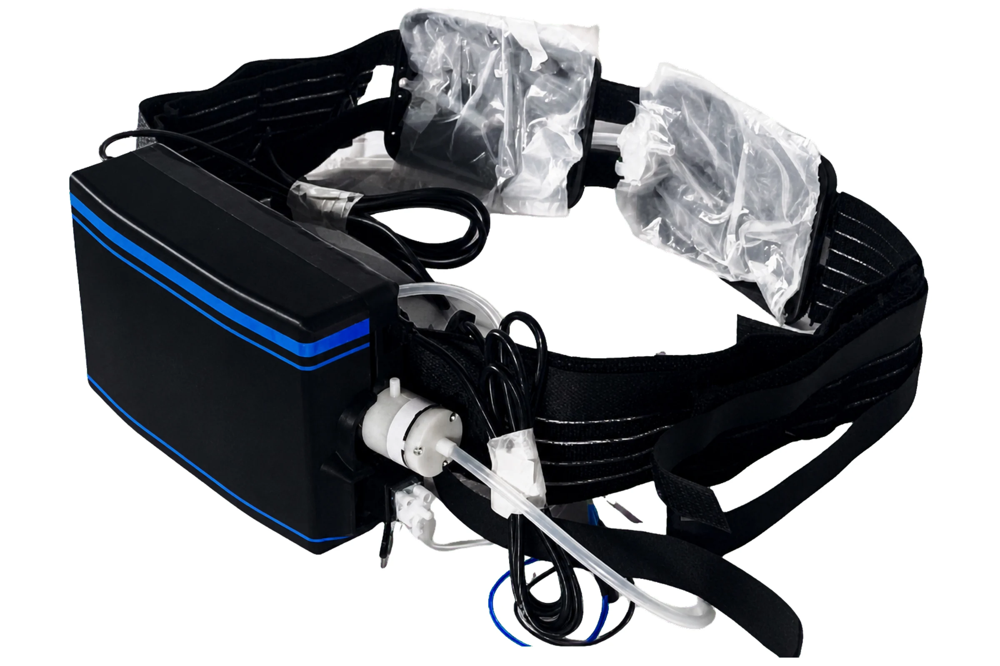
Final research prototype
Hero image 02
Hero image 03
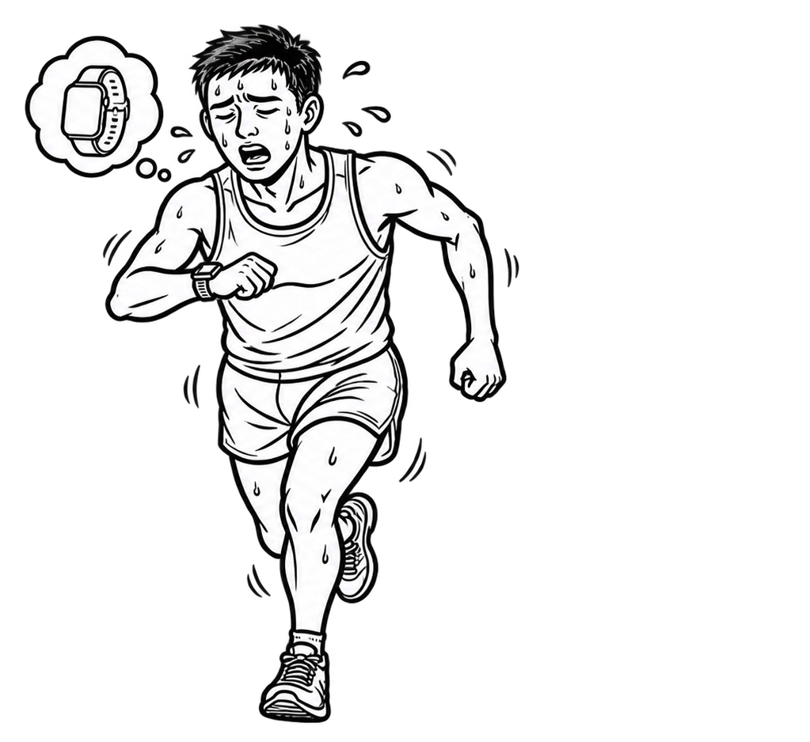
Performance data is visible during a run, while respiratory coordination remains difficult to perceive and regulate.
01
Research gap: respiratory guidance during running
Running technology measures performance more readily than it supports coordination between breathing and movement.
Breathing contributes to oxygen delivery, metabolic regulation, comfort, and perceived exertion. Respiratory discomfort can make effort harder to manage for amateur runners. Side stitch is also common and can limit performance. A contemporary review reports that roughly 70% of runners experienced side stitch within the previous year, although its aetiology remains unresolved.[1]
Consumer wearables help runners interpret pace, distance, and heart rate during or after a run. They provide little support for learning when to inhale and exhale. Stable locomotor–respiratory coupling rarely develops spontaneously in novice runners, and deliberate control becomes harder in noisy, high-motion outdoor settings.[2][3]
Breatho treats respiratory rhythm as an interaction problem. Rather than display another metric, it communicates a target breathing pattern through pressure on the body.
02
LRC and the pneumatic approach
A step-to-breath relationship provides the timing model; pressure makes that timing perceptible on the body.
Locomotor–respiratory coupling (LRC) is a stable numerical relationship between stride and breathing frequency. Ratios such as 2:1 and 3:2 specify the number of steps in one breathing cycle. Breatho applies a selected LRC ratio to convert repeated foot strikes into an inhale and exhale rhythm.
Visual guidance requires attention, audio competes with environmental sound, and vibration may be masked by whole-body movement. Breatho instead uses airbags that inflate and release against the abdomen. The resulting pressure cue corresponds physically with breathing while leaving vision and hearing available.
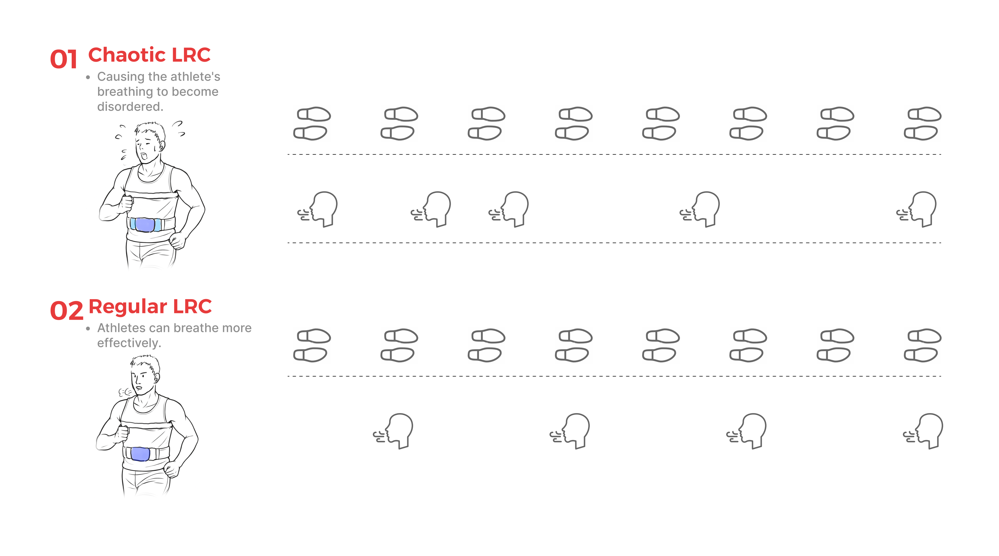
Irregular breathing relative to foot strikes, compared with a stable LRC pattern
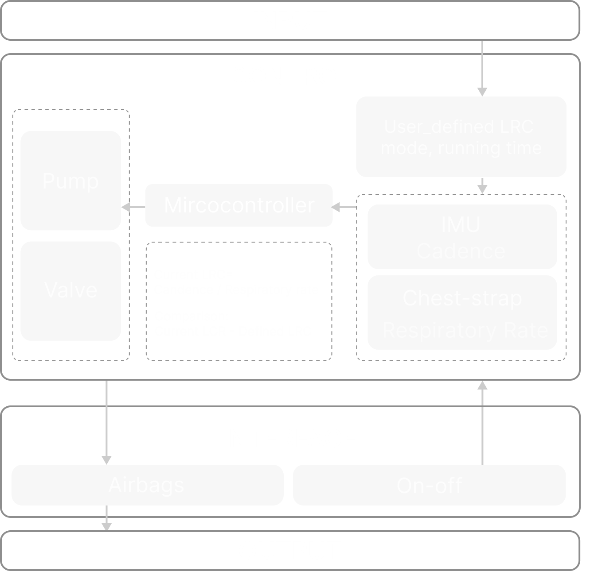
System operation
03
How Breatho works
Sensing, rhythm mapping, and pneumatic actuation operate as one feedback loop.
An inertial measurement unit detects steps and updates cadence. The controller maps cadence to the selected LRC cycle. The airbags inflate gradually during inhalation and release pressure to indicate exhalation. Cue frequency determines when the runner should breathe, while inflation level determines the perceived strength.
A respiration belt records the runner’s breathing pattern, and pressure sensors monitor actuation. The interface connects the two wearable modules, selects Test, Train, Run, or Relieve mode, and displays live pressure and respiratory signals during development and evaluation.
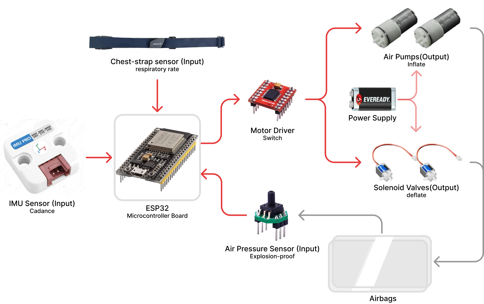
Hardware architecture
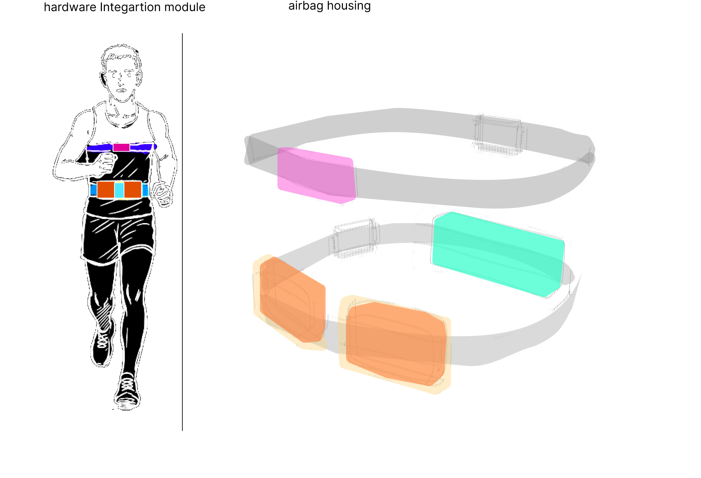
Wearable configuration and output
04
Wearable development
The prototype combines respiratory sensing, paired abdominal airbags, pressure control, and a compact hardware module across two connected belts.
The upper belt carries the respiration sensor. The lower belt places two airbags on the sides of the abdomen and houses the pumps, valves, pressure sensors, tubing, and controller. Separating sensing from actuation maintained contact with the body while allowing the pneumatic components to be repositioned during prototyping.
Two airbags distribute pressure across the abdomen rather than concentrating it at one point. Fitting studies informed their placement and enclosure before the complete system was evaluated during running.
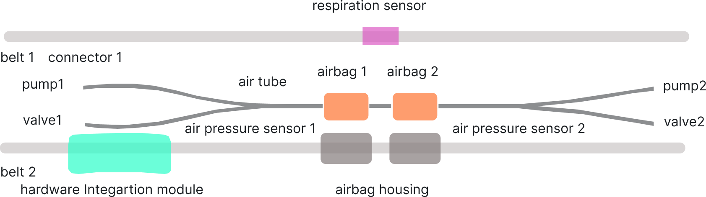
Wearable component arrangement
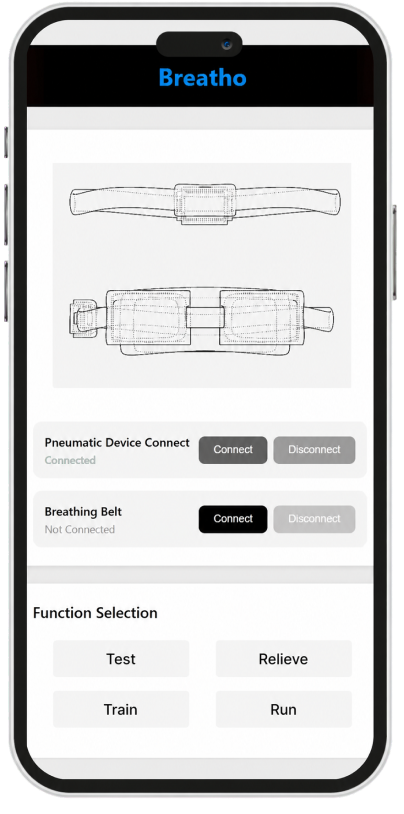
Device connection and mode selection
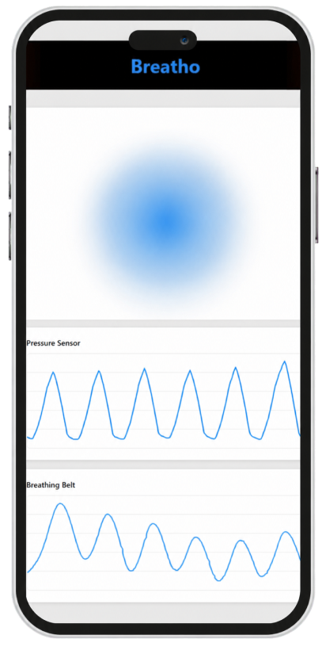
Live pneumatic and respiratory monitoringAdditional interface view placeholder
Experiment 03
Outdoor A/B running test
Six participants completed two five-minute outdoor runs, one with Breatho and one without. Capacitance-based sensing recorded respiratory activity in this less controlled setting.
The preliminary traces were more periodic when pneumatic guidance was active. This finding supports short-term feasibility, not long-term training effectiveness. Weight, pump noise, rigidity, and comfort remain priorities for the next prototype.
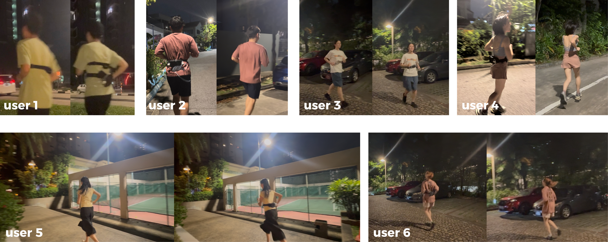
Outdoor running sessions with six participants
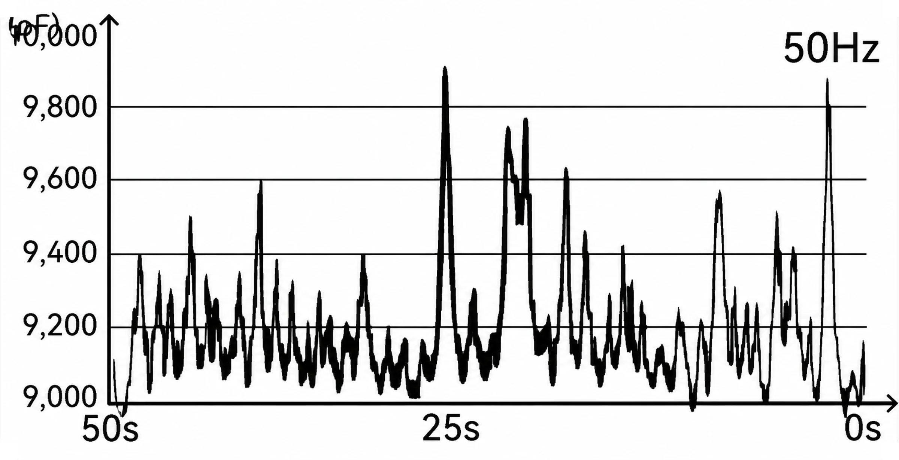
Without guidance
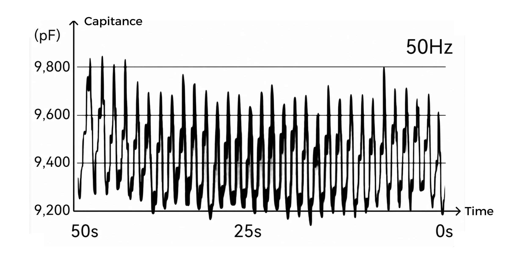
With Breatho
Experiment 01
Airbag configuration and placement
We prototyped different chamber sizes, divisions, and arrangements, then compared two wearable configurations. Two small airbags placed on the sides of the abdomen received an overall rating of 6.7 out of 7, compared with 6.2 for one large front airbag. Participants rated the lateral configuration as more perceptible, comfortable, and easier to interpret. It therefore became the basis of the running prototype.
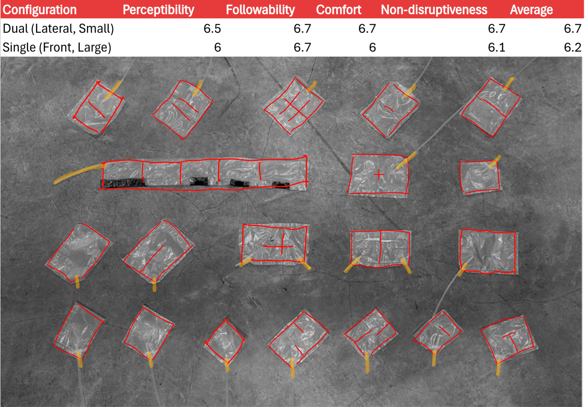
Airbag prototypes developed for the first experiment
05
Evaluation across three experimental stages
The studies moved from local pressure perception to guidance during treadmill and outdoor running.
Experiment 02
Controlled running evaluation
Six participants tested the pneumatic guidance while running on a treadmill. The study examined whether the pressure rhythm remained perceptible during movement, whether it aligned with running pace, and how each guidance mode affected comfort and perceived effort.
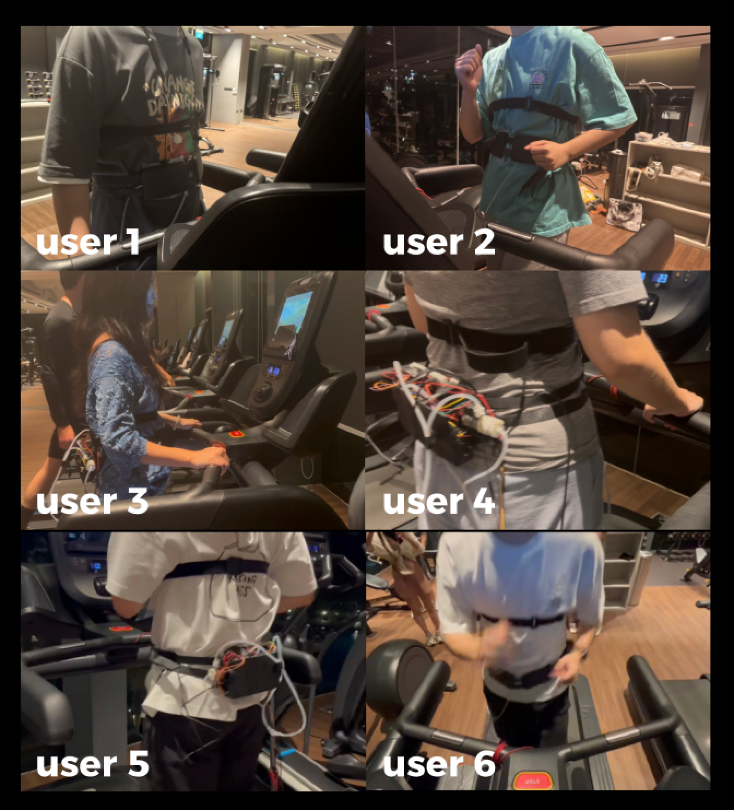
Controlled treadmill sessions with six participants
The three modes showed different strengths in the questionnaire. Train Mode received the highest overall satisfaction, and Relieve Mode was rated the most comfortable. Run Mode made the rhythm comparatively easy to follow but received lower comfort ratings. Across the study, participants rated natural alignment with pace at 4.38/5 and rhythm stability at 4.27/5.
13.46 → 11.39mean reported perceived exertion on the Borg scale
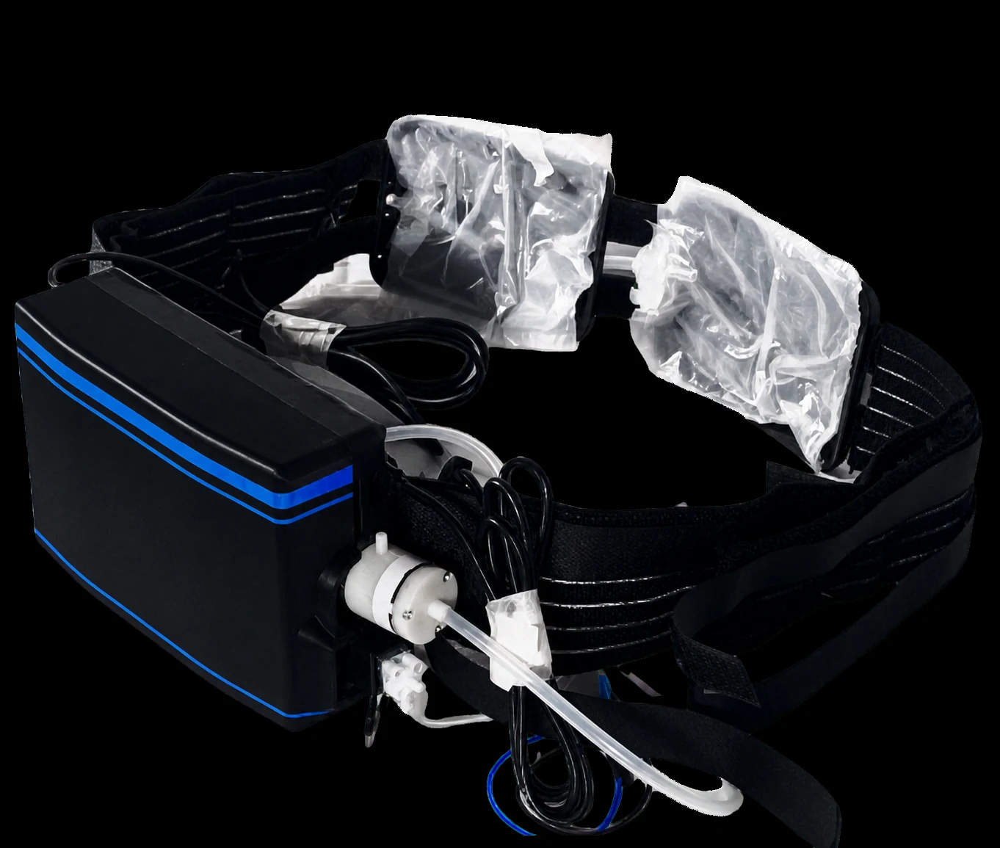
06
Findings and future research
Repeated body-centred cues may help runners learn a stable relationship between steps and breathing.
Breatho links step cadence to pneumatic feedback on the abdomen, making respiratory timing perceptible during running. The prototype provides initial evidence that this interaction is feasible and identifies pressure distribution, cue timing, and belt fit as key design variables.
The next iteration will reduce weight and pump noise, personalise cue timing, and gradually reduce feedback as the runner becomes familiar with the rhythm. Longer studies are needed to determine whether repeated use improves respiratory coordination after active guidance is removed.
Role: research framing, wearable design, pneumatic prototyping, interaction design, system development, user testing, and visual communication.
E. Harbour, V. Van Rheden, H. Schwameder, and T. Finkenzeller. 2023. Step-adaptive sound guidance enhances locomotor-respiratory coupling in novice female runners. Frontiers in Sports and Active Living 5. https://doi.org/10.3389/fspor.2023.1112663
F. M. Valsted, C. V. H. Nielsen, J. Q. Jensen, T. Sonne, and M. M. Jensen. 2017. Strive: Exploring Assistive Haptic Feedback on the Run. In OzCHI ’17, 275–284. https://doi.org/10.1145/3152771.3152801